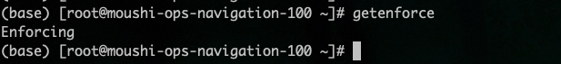
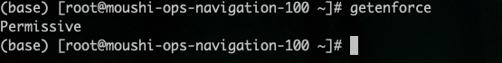

Sirius 运维笔记
运维开发攻城狮一枚，目前在杭州，主要做 CICD, K8S 运维相关,技术宅！
基础运维
这里主要是基础运维，涉及到基础环境搭建以及配置.
linux 基础运维
这里主要是 linux 基础运维，涉及到 linux 基础环境搭建以及配置和相关问题的处理.
目录
linux 基础配置
一、务器系统配置初始化脚本
当拿到一台 linux 服务器，需要对 linux 做一些操作，来保证后续部署的服务能够高效稳定的运行。
1.1 关闭 swap 分区
临时关闭
swapoff -a
永久关闭
打开文件/etc/fstab
vim /etc/fstab
找到swap分区将其注释掉即可
#/dev/mapper/cl-swap swap swap defaults 0 0
重启机器
reboot
1.2 关闭 selinux
查看 selinux 状态
getenforce

临时关闭
setenforce 0
重启系统后还会开启
永久关闭
sed -i 's/SELINUX=enforcing/SELINUX=disabled/g' /etc/selinux/config
sed -i 's/SELINUX=enforcing/SELINUX=disabled/g' /etc/sysconfig/selinux
重启机器
reboot
关闭后查看 selinux 状态
getenforce

1.3 关闭防火墙
关闭防火墙命令如下
systemctl stop firewalld && systemctl disable firewalld
1.4 主机名配置
拿到主机后，需要给服务器配置一个主机名，就像每个人有自己的名字一样
配置主机名命令如下
hostnamectl --static set-hostname sirius
1.5 ssh 配置
关闭 DNS 反查 使用了 dns 反查，这种情况下当 ssh 登录某个 IP 时，系统会试图通过 DNS 反查相对应的域名，如果 DNS 中没有这个 IP 的域名解析，则会等到 DNS 查询超时才会进行下一步，消耗很长时间。
关闭 dns 反查命令如下
sed -ie "/UseDNS/s/yes/no/g;/UseDNS/s/#//g" /etc/ssh/sshd_config
修改 ssh 超时时间
vim /etc/ssh/sshd_config
修改下面两项
ClientAliveInterval 60
ClientAliveCountMax 30
重启 ssh 服务
systemctl restart sshd
1.6 修改系统时区
查看系统时区是否正常

上述图片是已经修改正常状态
修改系统时间命令如下
mv /etc/localtime /etc/localtime.bak
-s /usr/share/zoneinfo/Asia/Shanghai /etc/localtime
然后输入上图命令即可验证时间即可
参考文档
linux 内核升级
一、在线升级
本升级方法适用于所有 Centos7.x 系列的 OS
1.1 查看当前内核版本
$ uname -r
3.10.0-514.el7.x86_64
$ uname -a
Linux hecs-133409 4.18.0-240.10.1.el8_3.x86_64 #1 SMP Mon Jan 18 17:05:51 UTC 2021 x86_64 x86_64 x86_64 GNU/Linux
$ cat /etc/redhat-release
CentOS Linux release 7.3.1611 (Core)
2.2 升级内核
2.2.1 更新 yum 仓库
yum update
2.2.2 启用 ELRepo 仓库
ELRepo 仓库是基于社区的用于企业级 Linux 仓库，提供对 RedHat Enterprise (RHEL) 和 其他基于 RHEL 的 Linux 发行版（CentOS、Scientific、Fedora 等）的支持。 ELRepo 聚焦于和硬件相关的软件包，包括文件系统驱动、显卡驱动、网络驱动、声卡驱动和摄像头驱动等。
(1) 导入 ELRepo 仓库的公共密钥
rpm --import https://www.elrepo.org/RPM-GPG-KEY-elrepo.org
(2) 安装 ELRepo 仓库的 yum 源
rpm -Uvh http://www.elrepo.org/elrepo-release-7.0-3.el7.elrepo.noarch.rpm
(3) 查看可用的系统内核包
yum --disablerepo="*" --enablerepo="elrepo-kernel" list available
输出如下
Loaded plugins: fastestmirror
Loading mirror speeds from cached hostfile
* elrepo-kernel: mirrors.tuna.tsinghua.edu.cn
elrepo-kernel | 2.9 kB 00:00:00
elrepo-kernel/primary_db | 1.8 MB 00:00:03
Available Packages
kernel-lt.x86_64 4.4.155-1.el7.elrepo elrepo-kernel
kernel-lt-devel.x86_64 4.4.155-1.el7.elrepo elrepo-kernel
kernel-lt-doc.noarch 4.4.155-1.el7.elrepo elrepo-kernel
kernel-lt-headers.x86_64 4.4.155-1.el7.elrepo elrepo-kernel
kernel-lt-tools.x86_64 4.4.155-1.el7.elrepo elrepo-kernel
kernel-lt-tools-libs.x86_64 4.4.155-1.el7.elrepo elrepo-kernel
kernel-lt-tools-libs-devel.x86_64 4.4.155-1.el7.elrepo elrepo-kernel
kernel-ml.x86_64 4.18.7-1.el7.elrepo elrepo-kernel
kernel-ml-devel.x86_64 4.18.7-1.el7.elrepo elrepo-kernel
kernel-ml-doc.noarch 4.18.7-1.el7.elrepo elrepo-kernel
kernel-ml-headers.x86_64 4.18.7-1.el7.elrepo elrepo-kernel
kernel-ml-tools.x86_64 4.18.7-1.el7.elrepo elrepo-kernel
kernel-ml-tools-libs.x86_64 4.18.7-1.el7.elrepo elrepo-kernel
kernel-ml-tools-libs-devel.x86_64 4.18.7-1.el7.elrepo elrepo-kernel
perf.x86_64 4.18.7-1.el7.elrepo elrepo-kernel
python-perf.x86_64 4.18.7-1.el7.elrepo elrepo-kernel
(4) 安装最新版本内核
yum --enablerepo=elrepo-kernel install kernel-ml
--enablerepo 选项开启 CentOS 系统上的指定仓库。默认开启的是elrepo，这里用 -kernel 替换
(5) 设置 grub2
内核安装好后，需要设置为默认启动选项并重启后才会生效
1、 查看系统上的所有可用内核
awk -F\' '$1=="menuentry " {print i++ " : " $2}' /etc/grub2.cfg
输出如下
0 : CentOS Linux (4.18.7-1.el7.elrepo.x86_64) 7 (Core)
1 : CentOS Linux (3.10.0-862.11.6.el7.x86_64) 7 (Core)
2 : CentOS Linux (3.10.0-514.el7.x86_64) 7 (Core)
3 : CentOS Linux (0-rescue-063ec330caa04d4baae54c6902c62e54) 7 (Core)
2、设置新的内核为 grub2 的默认版本
服务器上存在 4 个内核，我们要使用 4.18 这个版本，可以通过 grub2-set-default 0 命令或编辑 /etc/default/grub 文件来设置
方法一、通过 grub2-set-default 0 命令设置
其中 0 是上面查询出来的可用内核
grub2-set-default 0
方法二、编辑 /etc/default/grub 文件 设置 GRUB_DEFAULT=0，通过上面查询显示的编号为 0 的内核作为默认内核
vim /etc/default/grub
GRUB_TIMEOUT=5
GRUB_DISTRIBUTOR="$(sed 's, release .*$,,g' /etc/system-release)"
GRUB_DEFAULT=0
GRUB_DISABLE_SUBMENU=true
GRUB_TERMINAL_OUTPUT="console"
GRUB_CMDLINE_LINUX="crashkernel=auto rd.lvm.lv=cl/root rhgb quiet"
GRUB_DISABLE_RECOVERY="true"
3、生成 grub 配置文件并重启
grub2-mkconfig -o /boot/grub2/grub.cfg
输出如下
Generating grub configuration file ...
Found linux image: /boot/vmlinuz-4.18.7-1.el7.elrepo.x86_64
Found initrd image: /boot/initramfs-4.18.7-1.el7.elrepo.x86_64.img
Found linux image: /boot/vmlinuz-3.10.0-862.11.6.el7.x86_64
Found initrd image: /boot/initramfs-3.10.0-862.11.6.el7.x86_64.img
Found linux image: /boot/vmlinuz-3.10.0-514.el7.x86_64
Found initrd image: /boot/initramfs-3.10.0-514.el7.x86_64.img
Found linux image: /boot/vmlinuz-0-rescue-063ec330caa04d4baae54c6902c62e54
Found initrd image: /boot/initramfs-0-rescue-063ec330caa04d4baae54c6902c62e54.img
done
重启
reboot
4、验证
uname -r
输出如下
4.18.7-1.el7.elrepo.x86_64
2.3 删除旧的内核（可选）
2.3.1 查看系统中全部的内核
rpm -qa | grep kernel
输出如下
kernel-3.10.0-514.el7.x86_64
kernel-ml-4.18.7-1.el7.elrepo.x86_64
kernel-tools-libs-3.10.0-862.11.6.el7.x86_64
kernel-tools-3.10.0-862.11.6.el7.x86_64
kernel-3.10.0-862.11.6.el7.x86_64
2.3.2 删除内核
方法一 通过 yum remove删除
yum remove kernel-3.10.0-514.el7.x86_64 \
kernel-ml-4.18.7-1.el7.elrepo.x86_64 \
kernel-tools-libs-3.10.0-862.11.6.el7.x86_64 \
kernel-tools-3.10.0-862.11.6.el7.x86_64 \
kernel-3.10.0-862.11.6.el7.x86_64
方法二：使用 yum-utils工具删除
如果安装的内核不多于 3 个，yum-utils 工具不会删除任何一个。只有在安装的内核大于 3 个时，才会自动删除旧内核。
安装 yum-utils
yum install yum-utils
删除旧版本
package-cleanup --oldkernels
docker 基础运维
这里主要是 docker 基础运维，涉及到 docker 基础环境搭建以及配置和相关问题的处理.
目录
linux docker 安装与配置
一、docker 离线安装
1.1、下载离线安装包
访问地址: docker 离线下载地址
选择对应版本,此处选择
docker-20-10.8.tgz

可以下载到本地后上传至服务器，或者在服务器执行以下命令直接下载
yum -y install wget && wget https://download.docker.com/linux/static/stable/x86_64/docker-20.10.8.tgz
1.2、解压安装
执行以下命令，对第一步下载的docker-20.10.8.tgz进行解压
tar -zxvf docker-20.10.8.tgz
解压后会得到一个docker文件夹
执行以下命令，将 docker 命令添加到/usr/bin/目录下
cp docker/* /usr/bin/
验证
输入以下命令，验证是否生效
docker version

出现上述则说明安装成功，最下面的报错可以忽略，因为目前docker还没启动
1.3、启动 docker
需要配置 docker.service
docker.service 内容如下
cat > docker.service << EOF
[Unit]
Description=Docker Application Container Engine
Documentation=https://docs.docker.com
After=network-online.target firewalld.service containerd.service
Wants=network-online.target
[Service]
Type=notify
ExecStart=/usr/bin/dockerd
ExecReload=/bin/kill -s HUP $MAINPID
TimeoutSec=0
RestartSec=2
Restart=always
StartLimitBurst=3
StartLimitInterval=60s
LimitNOFILE=infinity
LimitNPROC=infinity
LimitCORE=infinity
TasksMax=infinity
Delegate=yes
KillMode=process
[Install]
WantedBy=multi-user.target
EOF
移动 docker.service 到如下目录
mv docker.service /usr/lib/systemd/system/
重新加载配置
systemctl daemon-reload
启动 docker
systemctl start docker
设置开机自启
systemctl enable docker
验证
输入以下命令，即可查看 docker 是否启动
systemctl status docker
启动成功，到此 docker 安装结束!
二、docker 在线安装
2.1、卸载已有 docker 服务
yum remove docker \
docker-client \
docker-client-latest \
docker-common \
docker-latest \
docker-latest-logrotate \
docker-logrotate \
docker-engine
2.2、安装 epel 更新源
yum install -y epel-release
2.3、安装 docker 仓库
yum install -y yum-utils device-mapper-persistent-data lvm2
设置稳定仓库，将指定文件或 url 添加为 yum 源并启用
# 官方源
yum-config-manager --add-repo https://download.docker.com/linux/centos/docker-ce.repo
# 官方源速度较慢，可以修改为添加国内原
yum-config-manager --add-repo https://mirrors.aliyun.com/docker-ce/linux/centos/docker-ce.repo
如果提示yum-config-manager not found，请执行以下命令安装
yum install yum-utils
2.4、安装 docker
按版本号排序列出存储库中可用的版本号
(base) [root@moushi-ops-navigation-100 ~]# yum list docker-ce --showduplicates | sort -r
docker-ce.x86_64 3:24.0.6-1.el7 docker-ce-stable
docker-ce.x86_64 3:24.0.5-1.el7 docker-ce-stable
docker-ce.x86_64 3:24.0.4-1.el7 docker-ce-stable
docker-ce.x86_64 3:24.0.3-1.el7 docker-ce-stable
docker-ce.x86_64 3:24.0.2-1.el7 docker-ce-stable
docker-ce.x86_64 3:24.0.1-1.el7 docker-ce-stable
docker-ce.x86_64 3:24.0.0-1.el7 docker-ce-stable
docker-ce.x86_64 3:23.0.6-1.el7 docker-ce-stable
docker-ce.x86_64 3:23.0.5-1.el7 docker-ce-stable
docker-ce.x86_64 3:23.0.4-1.el7 docker-ce-stable
docker-ce.x86_64 3:23.0.3-1.el7 docker-ce-stable
docker-ce.x86_64 3:23.0.2-1.el7 docker-ce-stable
docker-ce.x86_64 3:23.0.1-1.el7 docker-ce-stable
docker-ce.x86_64 3:23.0.0-1.el7 docker-ce-stable
......
根据需要自行选择需要安装的版本
# 默认安装最新版本docker
yum install -y docker-ce docker-ce-cli containerd.io
# 此处安装指定版本docker
yum install -y docker-ce-23.0.0-1.el7 docker-ce-cli-23.0.0-1.el7 containerd.io
# 安装docker命令补全工具
yum install -y bash-completion
2.5、启动 docker
启动 docker
systemctl start docker
设置开机自启
systemctl enable docker
三、docker 配置
3.1 配置 docker 镜像下载加速器
tee /etc/docker/daemon.json << eof
{
"registry-mirrors": [
"https://1nj0zren.mirror.aliyuncs.com",
"https://docker.mirrors.ustc.edu.cn",
"http://f1361db2.m.daocloud.io",
"https://registry.docker-cn.com"
]
}
eof
3.2 修改 docker 的默认镜像、容器数据存储位置
docker 的默认存储位置是 /var/lib/docker/ ，在根目录下，docker 运行一段时间后，会导致根目录存储爆炸。所有最好将存储位置自定义到服务器存储最大的目录下。
然后在 /etc/docker/daemon.json 文件中指定默认存储路径（此路径可自定义），添加以下内容：
"data-root": "/vdb/docker_images"
修改如下
{
"registry-mirrors": [
"https://1nj0zren.mirror.aliyuncs.com",
"https://docker.mirrors.ustc.edu.cn",
"http://f1361db2.m.daocloud.io",
"https://registry.docker-cn.com"
],
"data-root": "/vdb/docker_images"
}
3.3 重新加载配置与重启 docker
重新加载配置
systemctl daemon-reload
重新启动 docker
systemctl restart docker
参考文档
1.Docker 系列之一：在线安装 docker 和下载镜像
linux docker-compose 安装
前期准备
安装之前，请先确保 docker 已经安装，如果没有安装，请参考linux docker 安装与配置
docker-compose 各版本 下载地址
二进制安装 docker-compose
1、下载对应 linux 版本的 docker-compose 二进制文件
yum -y install wget
wget https://github.com/docker/compose/releases/download/v2.21.0/docker-compose-linux-x86_64
2、赋予执行权限
chmod +x docker-compose-linux-x86_64
3、移动到/usr/bin/ 路径下，并重命名为docker-compose
mv docker-compose-linux-x86_64 /usr/bin/docker-compose
4、验证并查看版本
docker-compose version
如下图所示，则安装成功

redis 基础运维
这里主要是 redis 基础运维，涉及到 redis 基础环境搭建以及配置和相关问题的处理.
目录
[1. redis 二进制安装与配置]
redis 二进制安装与配置
redis 各版本下载地址
前期准备
依赖c环境
如果没有安装c环境，执行以下命令，部署安装c环境
yum -y install gcc-c++
二进制安装
这里采用了源码编译安装，版本是 7.0.8
# 下载源码包
yum -y install wget && wget http://download.redis.io/releases/redis-7.0.8.tar.gz
# 解压
tar -zxvf redis-7.0.8.tar.gz -C /usr/local
# 编译安装
cd /usr/local/redis-7.0.8
make && make install
配置 redis
redis 的默认配置文件就是位于 redis 安装目录下的 redis.conf
即/usr/local/redis-7.0.8 目录下
去掉 redis 注释信息，重新生成新的 redis_6379.conf
cat redis.conf | grep -v "#" | grep -v "^$" > redis-6379.conf
需要将redis-6379.conf配置中dir的值做如下修改
dir /opt/redis/db
打开守护进程
daemonize yes
修改 redis 日志路径
logfile /var/log/redis/redis.log
以守护进程方式启动，使用本启动方式，redis 将以服务的形式存在，日志将不再打印到命令窗口中
在’/opt’目录下新建redis目录，用于存放conf 配置文件, db数据存储等
mkdir -p /opt/redis/conf /opt/redis/db
mv /usr/local/redis-7.0.8/redis-6379.conf /opt/redis/conf
在/var/log/目录下创建 redis 文件夹，用于记录 redis 的日志输出
mkdir /var/log/redis
启动 redis
准备redis.service文件
cat > redis.service << EOF
[Unit]
Description=Redis server
After=syslog.target network.target remote-fs.target nss-lookup.target
[Service]
Type=forking
ExecStart=/bin/bash -c '/usr/local/bin/redis-server /opt/redis/conf/redis-6379.conf'
ExecStop=/bin/bash -c '/usr/local/bin/redis-cli shutdown'
Restart=always
PrivateTmp=true
[Install]
WantedBy=multi-user.target
EOF
配置 redis system 启动
将生成的 redis.service 文件移动到 /usr/lib/systemd/system/目录下
mv redis.service /usr/lib/systemd/system/
启动 redis
systemctl daemon-reload
systemctl enable redis
systemctl start redis
查看 redis 启动状态
systemctl status redis
如下图所示，则启动成功

云原生
这里主要是云原生运维，涉及到 docker,k8s,prometheus 监控等一系列云原生相关组件的安装配置与使用问题.
云原生监控
这里主要是 监控，涉及到 prometheus alertmanager grafana k8s 等相关组件的安装使用与监控配置等.
夜莺安装与配置
夜莺官方推荐二进制安装，具体安装步骤参考与官网
一、二进制安装夜莺
1.1 部署安装 mysql
安装 mysql
yum -y install mariadb*
systemctl enable mariadb
systemctl restart mariadb
设置登陆密码
mysql -e "SET PASSWORD FOR 'root'@'localhost' = PASSWORD('passw0rd');"
开启远程登录
登录 mysql 后，执行一下语句，开启远程登录
GRANT ALL PRIVILEGES ON *.* TO 'root'@'%' IDENTIFIED BY 'passw0rd' WITH GRANT OPTION;
1.2 部署安装 redis
这里采用二进制安装，请参考 redis 二进制安装与配置
1.3 部署夜莺
安装夜莺
夜莺最新安装包下载地址,截止到目前，最近版本是v6.1.0
(1) 创建个 n9e 的目录，后面把 n9e 相关的文件解压到这里
mkdir -p /opt/n9e && cd /opt/n9e
(2) 下载 n9e 发布包，amd64 是 x84 的包，下载站点也提供 arm64 的包，如果需要其他平台的包则要自行编译了
tarball=n9e-v6.0.1-linux-amd64.tar.gz
urlpath=https://download.flashcat.cloud/${tarball}
wget -q $urlpath || exit 1
(3)解压安装包到/opt/n9e
tar -zxvf n9e-v6.0.1-linux-amd64.tar.gz -C /opt/n9e/
(4) 解压缩之后，可以看到 n9e.sql 是建表语句，导入数据库
mysql -uroot -ppassw0rd < n9e.sql
注: passw0rd 为第一步创建 mariab 时候的创建的密码
(5) 修改n9e数据库配置
配置文件在安装目录下 etc/config.toml
DSN="root:passw0rd@tcp(127.0.0.1:3306)/n9e_v6?charset=utf8mb4&parseTime=True&loc=Local&allowNativePasswords=true"
(6) 启动测试
启动 n9e
nohup ./n9e &> n9e.log &
检查 n9e.log 是否有异常日志，检查端口是否在监听，正常应该监听在 17000
ss -tlnp|grep 17000
启动成功如下图